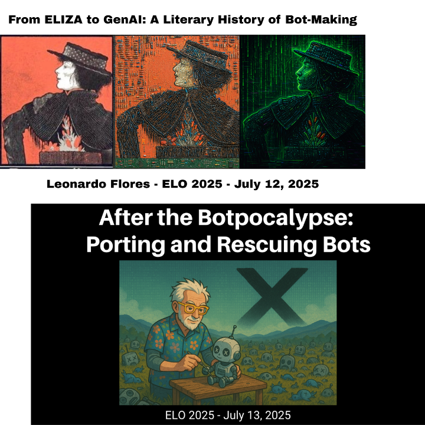

Presentations at the ELO 2025 Conference

I’m at the ELO 2025 conference in Toronto and will be participating in a panel and a round table. Here are the details and links to the slideshows.
From ELIZA to GenAI: A Literary History of Bot-Making
The art and craft of bot making and their relation to artificial intelligence have been intertwined from the start, most notably with Joseph Weizenbaum’s ELIZA program developed from 1964 to 1967. Commonly understood as robots without bodies, these autonomous programs have long been associated with the capacity of exhibiting human characteristics, and even attempting to be mistaken with human beings through the constraints of the Turing Test. From a literary perspective, bots meaningfully extend the concept of characterization by becoming active characters that humans can witness or interact with. This goes beyond the use of characterization as a social hack to attempt passing the Turing Test: it is a defining feature of this genre of electronic literature and digital writing. The literary history of bots in the past 60+ years include chatbots, NPCs in video games, social media bots, and most recently, GenAI-powered reconstructions of characters and people.
In this paper I examine key touchpoints in this literary history of bots by examining the platforms and dependencies in which they are created and experienced with the goal of understanding the technical and creative challenges of this e-literary genre. I will also contextualize both the impact of GenAI technologies in this bot making practices and the influence of the bot genre in GenAI and in our understanding of Artificial Intelligence itself.
Here’s a link to the slideshow.
After the Botpocalypse: Porting and Rescuing Bots
This lightning talk will discuss a few flourishing and extinction events for bots in Twitter and to a lesser extent in Mastodon, as access and resources rise and fall in these social media networks. I will focus on efforts for preserving, porting, and rescuing bots from Twitter and Mastodon to bring them to open publications in the World Wide Web. In addition to the publication of Twitter bot archives in the Electronic Literature Collections, I will showcase some of the work I have done to rescue now-inoperable Twitter bots created using Kate Compton’s Tracery JavaScript library using ChatGPT to create bespoke websites that can run JSON files designed for Tracery. The goal is to show how to leverage and subvert black box large language model generators to create open source small language models for computer generated writing.
Here’s a link to the slideshow.
Categories: Presentations